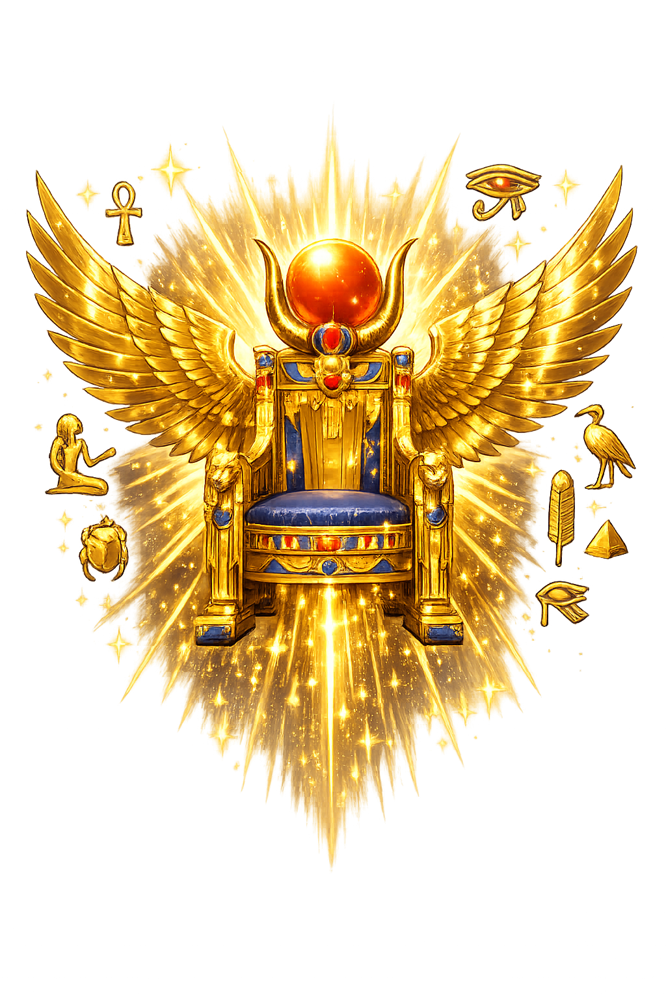

The Authentic Orthography
Magic, Motherhood, Throne · Throne (Egyptian ꜣst)

Why Ꜣst.com is the correct form
𓊨𓏏𓆇
The name in its original Egyptian form. Ꜣst (𓊨𓏏𓆇) is attested as magic, motherhood, throne — “Throne (Egyptian ꜣst)”. Its original diacritics and script distinctions carry the full phonetic and orthographic weight of the source tradition.
isis
Reduced to plain isis, the name loses everything that made it specific: original diacritics and script distinctions. What remains is an ASCII string that machines can parse but that no longer speaks with its original voice.
Ꜣst
The Unicode restoration recovers what ASCII flattened. Ꜣst restores original diacritics and script distinctions, returning the name to its original written dignity. The domain encodes to Punycode, but the browser displays the truth.
Ꜣst.com → xn--st-rq8h.com
The non-ASCII characters in Ꜣst are encoded while the ASCII remains visible. To the DNS, it is Punycode. To humanity, it is Ꜣst.
How Ꜣst travels from ancient script to scholarly transliteration
How Ꜣst was spoken
Magic, Motherhood, and Kingship
Ꜣst is the throne that walks. Her very name is written with the hieroglyph of a seat (O29), and the king sits on her lap as on the throne of Egypt itself. She is the sister-wife of Osiris, the mother of Horus, and the most formidable magician in the Egyptian cosmos — a goddess who knows the secret names of things and is not afraid to use them.
Where other gods rule by force or decree, Ꜣst rules by devotion, cunning, and love. She reassembles the murdered Osiris, hides her infant son from Set, and outwits the sun-god Re himself to extract his hidden name. Her story is the Egyptian closest approach to a gospel: a god who dies, a mother who saves, a child who inherits.
Her name and form are bound to the royal seat; every pharaoh is enthroned on Isis.
She commands heka, the force that animates ritual speech, and knows names that even Re keeps secret.
She conceives Horus after Osiris's death and nurses him in the papyrus thickets of Chemmis.
With outspread wings she shelters the living, the dead, and especially children and kings.
Stories of Ꜣst
Isis's mythology is the central drama of the Osirian cycle: love, murder, fragmentation, and restoration. It is also a handbook of magical power, because Isis does not accept loss as final.
When Set dismembers Osiris and scatters his body across Egypt, Ꜣst wanders the land in mourning, gathering the pieces with her sister Nephthys. She reassembles them, anoints the body, and, by her magic, conceives Horus. The Pyramid Texts and later Plutarch's On Isis and Osiris preserve different versions of the story, but the core is constant: Isis makes wholeness out of what was torn apart.
Pregnant and hunted, Isis hides in the marshes of Chemmis (Khemmis) to give birth to Horus. She protects him from scorpions, snakes, and the agents of Set, nursing him until he is old enough to claim his father's throne. The 'Isis lactans' image — Isis suckling Horus — became one of the most potent icons of divine motherhood in the ancient world.
In a New Kingdom narrative, Isis plots to learn the hidden name of Re, source of his power. She fashions a serpent from his spittle and earth, and its bite brings the sun-god to agony. Only when he reveals his true name does she provide the cure. The tale is a theological statement: even the supreme god is vulnerable to the one who knows the true word.
While fleeing Set, Isis travels with seven scorpions. When a rich woman shuts her door, the scorpions sting the woman's child; Isis, moved by pity, heals the boy with her voice and magic, then turns the venom back on the scorpion goddess Serqet. The story binds maternal vengeance to maternal mercy.
Isis is the goddess who refuses to let death have the last word. She does not bargain with the underworld; she walks into it, collects the fragments, and reassembles the beloved. Her power is not the thunderbolt but the patient knot, the hidden name, the breast that keeps a threatened child alive.
Enter Extended Lore